| 代码组及其含义 “模态代码” 和 “一般” 代码 “形式代码” 的功能在它被执行后会继续维持，而 “一般代码” 仅仅在收到该命令时起作用。定义移动的代码通常是“模态代码”，像直线、圆弧和循环代码。反之，像原点返回代码就叫“一般代码”。 每一个代码都归属其各自的代码组。在“模态代码”里，当前的代码会被加载的同组代码替换。 |
|||||||||||||||||||||||||||||||||||||||||||||||||||||||||||||||||||||||||||||||||||||||||||||||||||||||||||||||||||||||||||||||||||||||||||||||||||||
|
|||||||||||||||||||||||||||||||||||||||||||||||||||||||||||||||||||||||||||||||||||||||||||||||||||||||||||||||||||||||||||||||||||||||||||||||||||||
| 注1： “＊”记号表示为当电源打开或执行模式初期化复位时各族群内被选择的G 码。 注2： “ ρ”记号表示当电源打开或执行模式初期化复位时参数选择可能的G 码当作初期状态的显示，但 公制／英制变换只能在电源打开时选择。 注3： 指定2 个以上同一族群的G 指令时，最后一个G 指令有效。 注4： 这个G 指令一览表是一般常规的G 指令一览表。依据机床不同，利用呼叫G 码宏程序，会产生与 常规G 指令不同的操作。详细请参阅机床制造厂发行的说明书。 注5： 依照复位输入的不同，决定初始化动作是否进行。 （1） “Reset 1” 复位初期化参数（#1151 rstinit）ON 时，初始化模式。 （2） “Reset 2”及“Reset & Rewind” 信号输入时，初始化模式。 （3） 紧急停止解除时的复位 同“Reset 1” （4） 参考点回归等的个别功能开始时自动执行复位的时候。 同“Reset & Rewind” 注意 实际运行中G 指令之后如无数字则视为“G00” |
| 代码解释 |
| 英制指令／公制指令转换（G20, G21） |
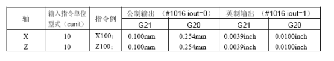 |
| G00 快速进给 |
1. 格式 G00 Xx／Ux Zz／ Ww； x, u, z,w 表示坐标值。 2.机能及目的 3.详细说明 4. 举例 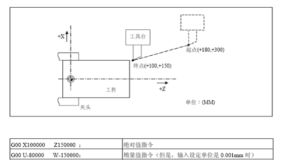 （注1） 参数 #1086 G0 Intp = 0 时，定位中的刀具移动路径为起点到终点的最短路径。定位速度在各轴 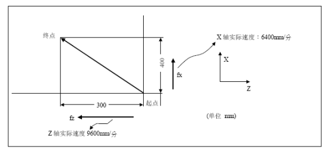 （注2） 参数 #1086 G0 Intp 设定为1 时，从起点到终点，刀具移动路径是依各轴快速进给速度移动。
|
| G01 直线插补 |
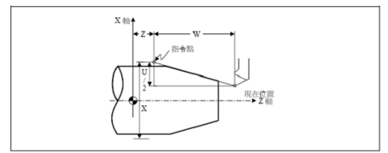 2.机能及目的 3.详细说明 4. 举例 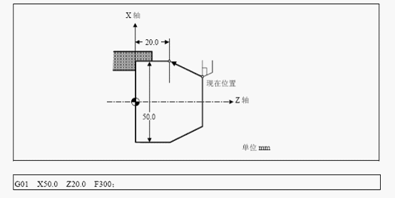
|
| G02/G03 圆弧插补 (G02/G03) |
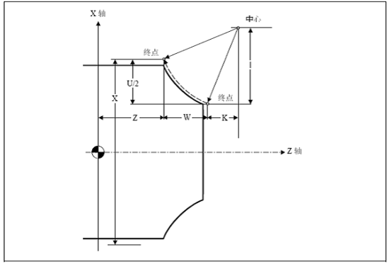 2.详细说明
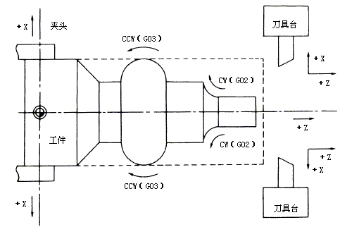 （2） 多象限的圆弧，可用一个程序段指令。 （3） 圆弧插补，需要下列信息。 （a） 旋转方向………………………… 顺时针（G02），反时针（G03） （b） 圆弧终点坐标…………………… 用地址X, Z, U,W 来表示 （c） 圆弧中心坐标…………………… 用地址I, K 来表示（增量值指令） （d） 进给速度………………………… 用地址F 来表示 （4） I,K 或R 没有指定时，会产生程序错误。 I,K 为圆弧起点到圆中心的X 轴和Z 轴之距离，要注意其正负符号。 （5） G2／G3 模式中，不能使用T 指令。 在G2／G3 的模式中指定T 指令，则产生程序错误（P151）。
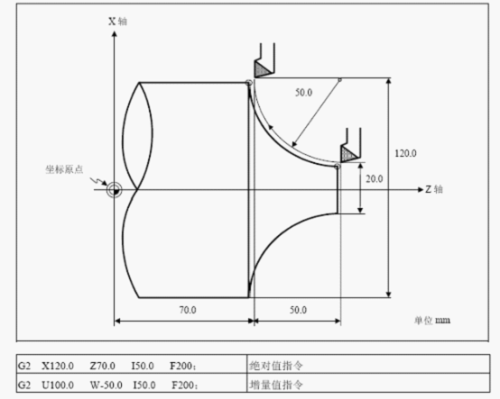 1.格式
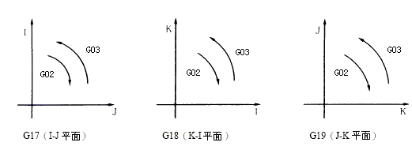
1.功能及目的 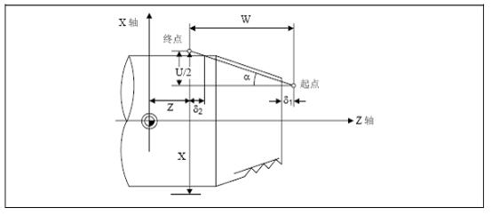 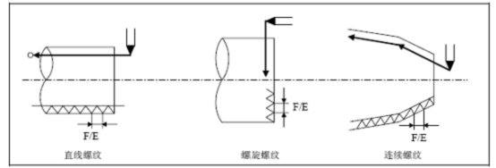 2.格式 |

| 同期进给／非同期进给（G94, G95） |
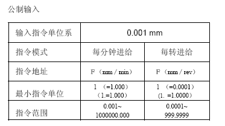 （2） 每转进给的实行速度（实际机械移动速度），如下式（式1）所列。 FC=F × N × OVR……………（式1） FC ：实行速度（mm／分，英寸／分） F ：指令速度（mm／转，英寸／转） N ：主轴／回转转速（r／min） OVR ：切削进给速度调整 式1 所示FC 为实行速度，如有多轴同时指令时，FC 为各轴的合成量。 （注1） 在设定显示单元画面上”位置显示”画面，FC 为实行速度（mm／分或英寸／分），是 由指令速度主轴转速和切削速度调整转换成每分钟速度而成的。 （注2） 以上述的实行速度如超过切削进给的锁定速度时，在锁定速度被锁定。 （注3） 执行同期进给时，如主轴转速为零，则会出现操作报警“ 105 ”。 （注4） 在机械锁住高速加工时，这速度为240,000 mm／分（或9448 英寸／分；240,000 度／分）， 和主轴转速及指令没有关系。 （注5） 在空运转时，为非同期进给，由外部来设定速度（mm／分或英寸／分）。 （注6） 当电源开启时或执行M02 及M30 指令时，为非同期（G94）或同期（G95）的进给由参 数”#1074 I-Sync”来设定。 |
| 螺纹切削 (G33, G34, G76, G78) |
在螺纹切削模式（G33, G34, G76, G78 指令），螺纹距离用F7 位数或E8 位数来表示。 螺纹的螺距指令范围是0.0001～999.9999 mm／转（F7 位数）或0.0001～999.99999 mm／转（E8 位数） （输入单位为μm）。 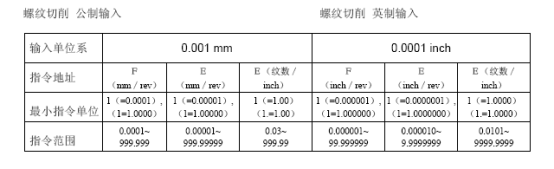
|
| 精确停止检查（G09） |
1. 功能及目的 刀具的进给速度急促变化时，为了防止机械的振动及防止转角切削时圆角的发生；机械减速停止后，定位 的状态或减速时间的经过确认后，次一单节的指令才开始执行。为达成这些目的的功能即为精确停止检查 功能。 以机械参数”＃1193 inpos”选择为减速检查时间的控制或为定位的控制。当”#1193 inpos”为1 时为定 位有效。 定位幅宽由机械制造厂依伺服参数画面的参数”＃2224 sv024”设定。 2. 指令格式 3.举例 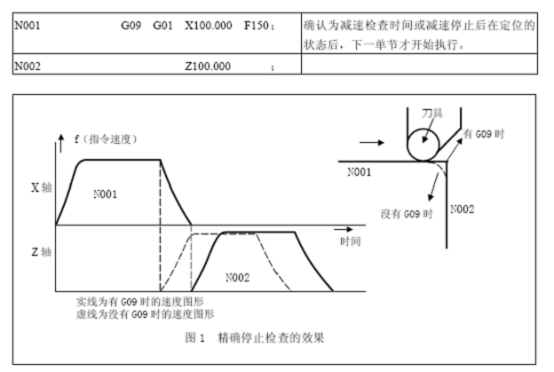 |
| 精确停止检查模式 (G61) |
1. 功能及目的 G09 实现的精确停止检查仅对含有G09 的单节进行定位宽度状态确认。G61 指令为持续有效指令，所以， 在G61 指令后的切削指令（G01～G03）全部在各单节的终点减速，执行定位宽度状态的 2. 格式 |
| 自动转角进给倍率调整 ( G62 ) |
1. 格式 G62； 2. 功能 3.详细说明 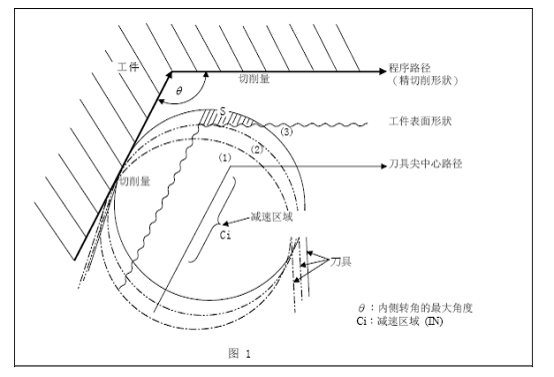 （1） 操作 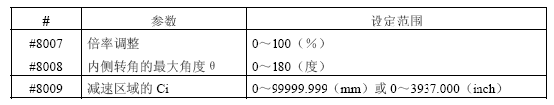
|
| 攻丝模式 ( G63 ) |
G63； 2. 功能 在G63 指令下，变为如下适宜于攻丝加工的控制模式。 |
| 切削模式 ( G64 ) |
G64； 2. 功能 G64 指令使用时，NC 以实现平滑切削面的切削模式加工。此模式与精确停止检查模式（G61）相反，在 |
| G 73 粗加工循环切削量(G73) |
1. 格式 G73 Ui Wk Rd ； G73 Aa Pp Qq Ww Ff Ss Tt； Ui ：X轴方向切削预留量 Wk:Z轴方向切削预留量 Rd ：分割次数 Aa ：加工路径的程式号码（如在执行中的程式，则可省略） Pp ：加工路径的开始顺序号码（如从程式的前头开始，则可省略）。 Qq ：加工路径的终了顺序号码（如在程式最后，则可省略），但是Q指定的号码，在M99指令之后，则以M99为主。 Uu：X轴方向的预留量 Ww：Z轴方向的预留量 Ff ：切削速度 Ss ：主轴速度 Tt ： 刀具选取 2. 功能 |

| 每秒延时；G04 |
|
| 恒表面速度控制 ( G96, G97 ) |
1. 格式 G96 Ss Pp；恒表面速度有效 Ss ： 指定周速度 Pp ： 指定恒表面速度控制轴 G97 ；恒表面速度取消 2. 功能 3.详细说明 （1） 恒表面速度控制轴可用参数 （#1181 G96_ax） 设定。 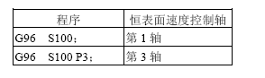 （3） 切换程序及操作例 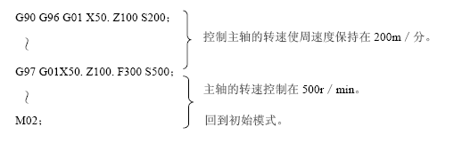 |
| 刀尖半径补偿（G40, G41, G42, G46） |
1. 格式 G18（Z X 平面）G41／G42 X_ Z_ I_ K_； 此时移动模式请用直线指令（G00, G01） 2. 功能及目的 1.功能和目的 2.格式
1.格式
1.格式 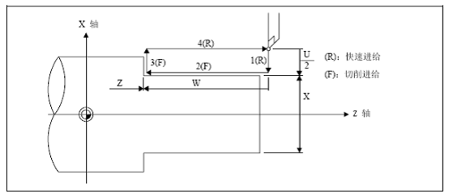 1.格式 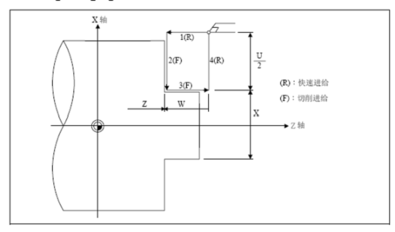 |

| 复合形固定循环 |
1. 格式 G70 A P Q ； G71 G71 U R ； A P Q U W F S T ； G71 G72 W R ； A P Q U W F S T ； G73 G73 U W R ； A P Q U W F S T ； G74 G74 R ； X（U） Z（W） P Q R F； （G75 亦同样） G76 G76 P R ； X（U） Z（W） P Q R F； 2. 机能及目的 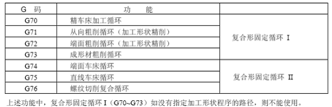 3.详细说明 （1） 复合形固定循环I 的A,P,Q 指令如下所述。 （a） 无A 指令时，直接呼叫执行程序的P 和Q。如有A 指令，没有P 指令时，则A 指令指定程 序的第一程序段视为P 指令。 （b）如没有Q 指令时，继续执行直至找到M99 指令。如Q 指令和M99 指令都没有时，则继续 执行直至形状加工程序的最终程序段。 |
| 端面粗削循环(G72) |
1. 格式 G72 Wd Re Hh ； ←（使用参数设定值时可省略） G72 Ae Pp Qq Uu Ww Ff Ss Tt ； 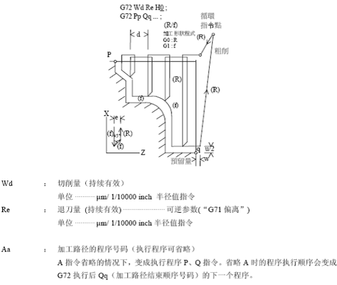 2. 机能及目的 |
| 成形材粗削循环(G73) |
1. 格式 G73 Ui Wk Rd ； G73 Aa Pp Qq Uu Ww Ff Ss Tt； Ui ： X 轴方向切削预留量 i ? 没有P,Q 指令时，用切削预留量来表示。 Wk ： Z 轴方向切削预留量 k ? 持续有效数据。 Rd ： 分割次数 d ? 符号无效。 ? 切削预留量为半径指定。 Aa ： 加工路径的程序号码 （执行程序可省略）。 Pp ： 加工路径的开始顺序号 码 （如从程序最后，则可省略）。 Qq ： 加工路径的终了顺序号 码 （如在程序最后，则可省略） ： 但是Qq 在M99 之后，则以M99 为主。 ： ? 有P,Q 指令时的预留量。 Uu ： X 轴方向的预留量u u ? 符号无效。 Ww ： Z 轴方向的预留量w w ? 直径或半径指定根据参数（#1019dia）变化。 ： ? 偏移方向由路径决定，请参阅G71 的「切削预留量方向。」 Ff ： 切削速度（F 功能） Ss ： 主轴速度（S 功能） Tt ： 刀具指令（T 功能） 路径程序中的F,S,T 指令无效，粗削指定值或之前值有 效。 2. 机能及目的 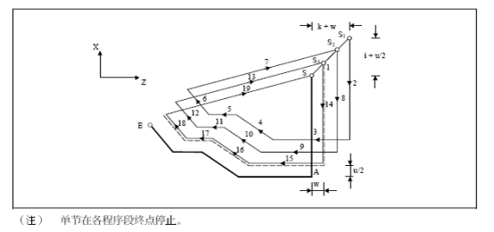 |
| 精车床加工循环(G70) |
1. 格式 G70 A_ P_ Q_ ； A ：加工路径的程序号码（执行程序可省略） P ：加工路径的开始顺序号码（如从程序的前面开始，则可省略） Q ：加工路径的终了顺序号码（如在程序最后，则可省略） 但是Q 指定的号码，在M99 指令后，则以M99 为主。 （1）精车床加工循环中，加工路径程序的F,S,T 指令有效。 （2）G70 的循环终了时，刀具快速回到原始点，读入下面的程序段。 2. 机能及目的 |
| 端面车床循环(G74) |
1. 格式 G74 Re； G74 X／（U）x Z／（W）z Pi Qk Rd Ff； Re ：退回量e（没有X／U，P 指令有时） （持续有效）。 X／Ux ：B 点X 坐标（绝对值／增量值）。 Z／Wz ：B 点Z 坐标（绝对值／增量值）。 Pi ：刀具的偏移量（半径指定，增量值，符号不要） Qk ：切削量（半径指定，增量值，符号不要） Rd ：切削底端刀具的偏离量 没有符号时，第一次切削底端刀具便偏离； 而符号指定时，第一次切削底端刀具不会偏离， 从第二次以后切削底端才偏离。 Ff ：进给速度 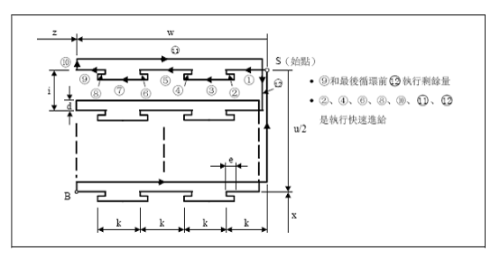
|
| 直线车床循环；G75 |
1. 格式 G75 Re； G75 X／（U）x Z／（W）z Pi Qk Rd Ff； Re ：退回量（没有X／U，P 指令时） （持续有效）。 X／Ux ：B 点X 坐标（绝对值／增量值）。 Z／Wz ：B 点Z 坐标（绝对值／增量值）。 Pi ：切削量（半径指定，增量值，不要符号） Qk ：刀具的偏移量（半径指定，增量值，不要符号） Rd ：在切削底端的偏离量 无符号的场合，第一次切削至底端即偏离。 有负符号场合，第一次切削不偏离，从第二 次 以后切削底端才作偏离。 Ff ：进给速度 2. 机能及目的 |
| 复合螺纹切削循环(G76) |
1. 格式 G76 Pmra Rd； G76 X／U Z／W Ri Pk Qρd F ； m ： 切削次数00~99（持续有效） R ： 倒角量00~99（持续有效） 以螺纹螺距1 为基准，0.01~9.91 为加工幅度范围、小数点省略以2 位整数表示。 a ： 刀尖角度（螺纹角度）00~99（持续有效）0°~99°的角度以1°为单位指定。 “m”，“r”和“a”可用地址P 持续指定。 （例）m=5，r=1.5，a=0°时，P 值为051500 即P051500，前后的0 不能省略 d ： 预留量（持续有效） X／U ： 螺纹部分的X 轴终点坐标 螺纹部分的终点X 轴坐标，可用绝对值或增量值来表示。 Z／W ： 螺纹部分的Z 轴终点坐标 螺纹部分的Z 轴坐标，可用绝对值或增量值来表示。 i ： 螺纹的倾斜部分的高度（半径值） 当i=0 时为直线螺纹 k ： 螺牙高度 螺牙的高度用正的半径值表示。 ρd ： 切削量 第一次的切削量以正的半径值指令。 λ ： 螺纹螺距 2. 机能及目的 |
| 钻孔用固定循环 （G80~G89） |
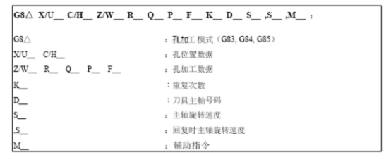 （2） 直线钻孔 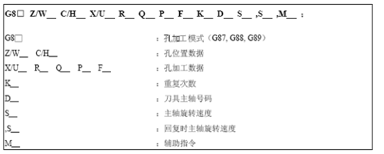 G83 端面深孔钻孔循环Ⅰ;（G83 纵向深孔钻孔循环Ⅰ；G87） G83（G87）X（z） C Z（x） R r Q q P p F f K k Mm ；  （1） 退刀量d 根据参数（#8013 G83 退刀）设定。退刀为快速进给。 （2） （Mα） ： 有C 轴箝住的M 码指令（Mm）时，M 码（Mm）必须输出。 （3） （Mβ） ： 有C 轴箝住的M 码指令（Mm）时，C 轴非箝住的M 码（C 轴箝住的M 码加1 即Mm+1）输出。 （4） Ｐ ： 延时时间为P 指令时间。 （5） Ｐ ’ ： C 轴非箝住的M 码（Mm+2）输出后，依参数#1184（clmp_D）所设定的 时间执行延时。 没有Q 指令时（钻孔） G83（G87）X（z）__ C__ Z（x）__ R r Pp F f Kk Mm ； 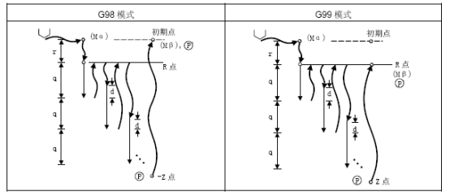 端面攻丝循环；G84（纵向攻丝循环；G88）/ 端面逆攻丝循环；G84.1（纵向逆攻丝循环；G88.1） 详细说明 以下为G84（G88）的说明。攻丝逆循环G84.1（G88.1）的攻丝旋转方向为逆旋转。 G84 (G88) Xx1 Cc1 Zz1 Rr1 Pp1 Ff1 Kk1 Dd1 Ss1 ,Ss2 ,Rr2 Mm1 ; 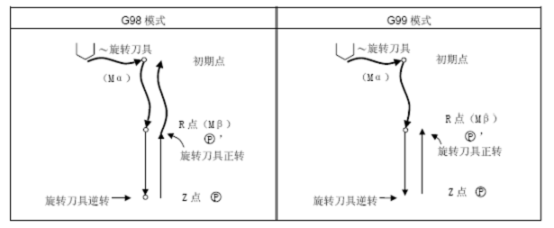 （1） Mα,Mβ, Ｐ , Ｐ ’ 和13.5.1的”有Q指令的情况（深孔）”相同。 （2） G84（G88）执行时，变成倍率取消状态，倍率自动调整为100%。 （3） 空运转在控制参数“G00 空运转“ON 时对定位指令有效。G84（G88）执行中，按运转延时按钮， 复位操作完成后程序段停止。 （4） 单节运转时，在攻丝循环的折返位置不停止。 （5） G84,（G88）持续操作中，输出”攻丝中”NC 信号。 （6） G84,（G88）同期攻丝持续操作中，没有M3, M4, S 码等输出。 （7） R 点一旦停止，会输出旋转刀具正转信号。 （8） 孔底旋转刀具执行逆转攻丝。 （9） 旋转刀具逆转（M04）、旋转刀具正转（M03）的信号输出前，如旋转刀具须停止（M05），请编 辑固定循环子程序。 G85 端面搪孔循环；G85（纵向搪孔循环G89） 详细说明 G85 (G89) X (z)_ C_ Z (x)_ R_ P_ F_ K_ M_ ； 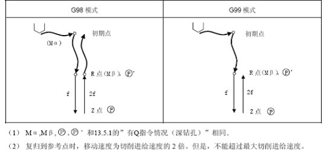 |
| 机械坐标系选择（G53） |
1. 格式 G53 G00 Xx Zz αα； G53 G00 Uu Ww ββ； αα ：α表示附加轴 ββ ：β为附加轴的增量指令轴 2. 机能及目的 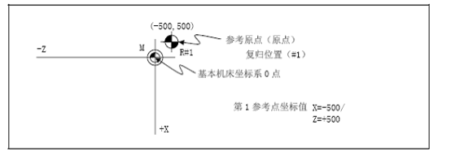 |
| 精车床加工循环(G70) |
1. 格式 G70 A_ P_ Q_ ； A ：加工路径的程序号码（执行程序可省略） P ：加工路径的开始顺序号码（如从程序的前面开始，则可省略） Q ：加工路径的终了顺序号码（如在程序最后，则可省略） 但是Q 指定的号码，在M99 指令后，则以M99 为主。 （1）精车床加工循环中，加工路径程序的F,S,T 指令有效。 （2）G70 的循环终了时，刀具快速回到原始点，读入下面的程序段。 2. 机能及目的 |
| 纵向粗削循环(G71) |
1. 格式 G71 Ud Re G71 Aa Pp Qq Uu Ww Ff Ss Tt ； 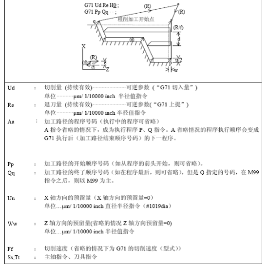 2. 机能及目的 |
||||||||||||
|
||||||||||||
| 坐标系的设定（G92） |
1. 格式 G92 Xx2 Zz2 αα2； αα ：附加轴 2. 机能及目的 3.详细说明 |
| 参考点（原点）复归（G28, G29） |
1. 格式 G28 Xx1 Zz1 αα1；（α为附加轴）[自动参考点复归] G29 Xx2 Zz2 αα2；（α为附加轴）[开始位置复归] αα1／αα2 ：附加轴 2. 机能及目的 3.详细说明 |
| 参考点核对（G27） |
1. 格式 G27 Xx1 Zz1 αα1 Pp1 ； G27： 核对指令 Xx1 Zz1 αα1： 复归控制轴 Pp1： 核对号码 P1：第1 参考点核对 P2：第2 参考点核对 2. 机能及目的 |
| 局部坐标系设定（G52） |
1. 格式 G54 （G54~G59） G52 Xx1 Zz1 2. 机能及目的 3.详细说明 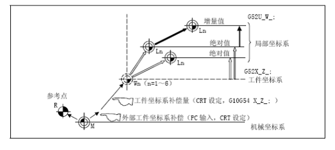 |
| 自动刀具长测量 （G37） |
1. 格式 G37 α_ R_ D_ F_ ； α ： 测量轴地址和测量位置的坐标值。……X, Z R ： 从测量速度开始移动点到测量位置的距离指令。（半径值固定，增量值） D ： 刀具停止容许范围指令。（半径值固定，增量值） F ： 测量进给速度的指令。 R_, D_, F_省略时，以参数设定的值为准。 ＜参数＞（加工参数画面的”自动刀具长测量”） ・#8004 测量速度 0～60000〔mm/min〕 ・#8005 减速区域r 0～99999.999〔mm〕 ・#8006 测量区域d 0～99999.999〔mm〕 2. 机能及目的 |
| 跳跃功能 （G31） |
1. 格式 G31 Xx／Uu Zz／Ww Ff； x, z, u, w, ：各种坐标值。绝对值和增量值指令。 f ：进给速度（mm／分） 2. 机能及目的 3.详细说明 |